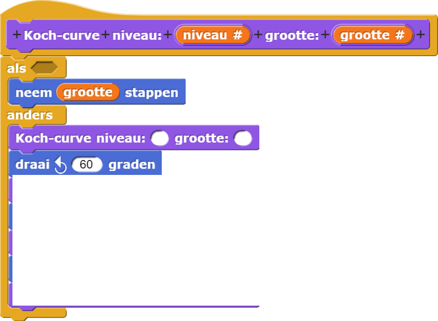

Sneeuwvlokje van Koch
Deze fractaal wordt het Sneeuwvlokje van Koch genoemd:

Het sneeuwvlokje van Koch bestaat uit drie kopieën van de kromme van Koch die geplaatst
worden langs de zijden van een driehoek:

Anders dan boom- en driehoekfractalen keert deze de sprite niet terug naar
dezelfde plek na elke recursieve aanroep. Hij vervangt een rechte lijn door een gebogen lijn.

Het basisgeval is gewoon een lijn:

Op het volgende niveau wordt de rechte lijn vervangen door 4 lijnen, die elk een derde zijn van de lengte
van de voorouder die op deze manier geplaatst worden:

Op elke volgende niveau worden de rechte lijnen van het vorige niveau op precies dezelfde manier vervangen
door gebogen lijnen.


-
Maak deze recursieve procedure af om één zijde van het sneeuwvlokje van Koch te tekenen.
 - Als je één zijde van het sneeuwvlokje aan de praat hebt, kan je het hele sneeuwvlokje maken door er drie te combineren.
-
 Waarom moet de grootte in elke recursieve aanroep één derde zijn van de
grootte van het vorige niveau? Er zijn vier kopieën, dus waarom niet een vierde van de
grootte?
Waarom moet de grootte in elke recursieve aanroep één derde zijn van de
grootte van het vorige niveau? Er zijn vier kopieën, dus waarom niet een vierde van de
grootte?
-
Deze plaatje lijken sterk op de boog van Koch. Kijk of je plaatjes zoals deze kan maken door de
draaihoek te veranderen.